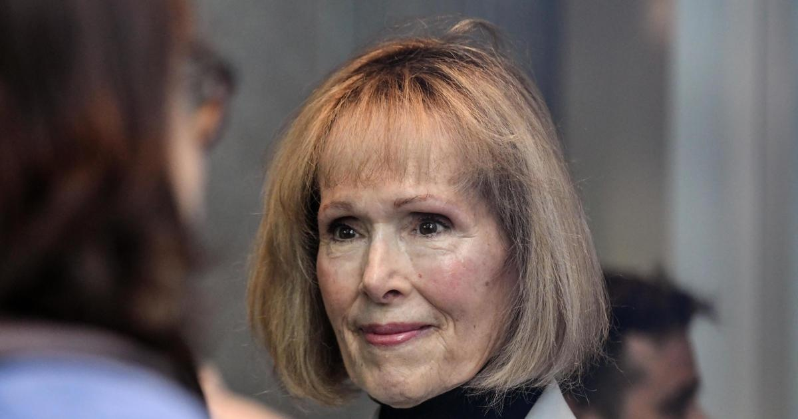

Jury deliberates in E. Jean Carroll lawsuit accusing Trump of rapeA jury of six men and three women began deliberations Tuesday in the civil lawsuit accusing former President Donald Trump of battery and defamation. The trial in New York City wrapped up one day earlier with attorneys for the writer E. Jean Carroll and Trump making their closing arguments, following seven days of testimony from witnesses for Carroll, who says Trump raped her decades ago. "Donald Trump has an M.O.," and that is targeting women in "semi-public" places and "grabbing" their genitals, Carroll's attorney, Roberta Kaplan, said Monday during closing arguments in the civil defamation and battery trial. But what Kaplan said is Trump's "M.O." his attorney Joe Tacopina called "a distraction," from what he said was a lack of evidence supporting Carroll's claims. Kaplan reminded the jury that for the battery charge, "all you need is that it is more probable than not" that Trump attacked Carroll to find him liable, a much lower standard than the "beyond a reasonable doubt" standard applied in criminal trials. and in the trial. Tacopina said that was because "challenging (Carroll's) story is our defense." He added, "There were no witnesses to call." "Donald Trump doesn't have a story to tell other than to say it was a lie," Tacopina said. Tuesday morning, Trump posted on Truth Social, saying he was "not allowed to speak or defend myself, even as hard nosed reporters scream questions about this case at me." Trump was permitted to testify in his own defense, but chose not to. Carroll says Trump assaulted and raped her in a Bergdorf Goodman department store dressing room in Manhattan in the mid-1990s, and then defamed her when she went public with the accusation in 2019. Trump, who has claimed he never met Carroll and "she's not my type," has strenuously denied her accusations. Those claims are at the center of Carroll's defamation argument against Trump. The jury watched the moment in when he was shown a late 1980s photo that included both him and Carroll, and he incorrectly . Carroll herself testified during the trial, relaying a detailed account of her accusation, which was first published in 2019 in New York magazine as an excerpt from her book, "What Do We Need Men For?: A Modest Proposal." Carroll, then about 52, said she bumped into Trump, then about 50, while exiting the store one evening. She said Trump recognized her, saying "Hey, you're that advice lady," referring to a column she has written for nearly three decades. She said she replied, "Hey, you're that real estate tycoon." Carroll said Trump told he wanted advice on a gift purchase for a girl. She described pleasant, "joshing" banter between the two as they walked through the store, even after he suggested they go to the lingerie department. But things took a sudden turn when they went to a dressing room, she said. Carroll said Trump quickly shut the door and pushed her against the wall, her head slamming against it. She said Trump forcefully penetrated her with his hand, causing severe pain, and then penetrated her with his penis. Carroll said she was able to wedge her knee between them, pushing him away before leaving as fast as she could. She described telling two other people about the alleged attack, in the moments and day after, friends Lisa Birnbach and Carol Martin. Both were called to testify during the trial, delivering testimony that largely matched Carroll's recollection. Other witnesses called by Carroll included a clinical psychologist, two former Bergdorf Goodman employees and two other women who described alleged attacks by Trump. Jurors also listened to an "Access Hollywood" clip in which Trump could be heard crudely describing grabbing women by their genitals. Trump's lawyers sought to pick apart the allegations brought forth by Carroll and the . Attorney Joe Tacopina zeroed in on Carroll's inability to say conclusively exactly when, other than either late 1995 or early 1996, the alleged attack occurred, and noted that she did not identify Thursday as the likely day of the week the attack allegedly occurred until trial. The jury heard testimony from a former Bergdorf's manager who said in the 1990s the store was open late on Thursdays, though at times sparsely staffed — typically with few shoppers or attendants near the sixth floor lingerie department. Jurors were shown emails and text messages between Carroll, Martin and Birnbach that appeared to show their animosity to Trump, who was then the president, as the defense tried to portray an effort by the trio to use Carroll's story to tarnish him. Jurors began deliberations Tuesday to decide if Trump is liable for the alleged attack, and if he defamed Carroll after she came forward. This is an updated version of a story originally published on May 8, 2023. for more features. |
 |